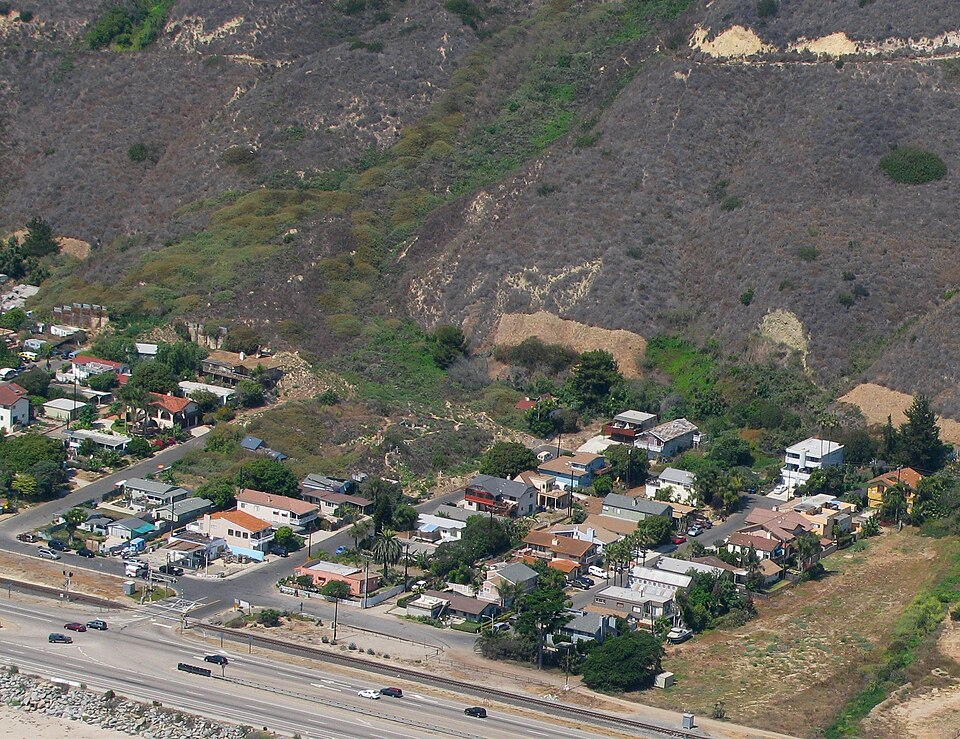

"Mudslide" is a word of newspapers and insurance policies, not of geotechnical engineering. What the public calls a mudslide usually turns out, on inspection, to be one of several physically distinct processes: a shallow translational slide in saturated colluvium, a channelised debris flow surging down a steep gully, a mud flow of plastic fine-grained soil, a deep-seated rotational slide reactivated after a wet winter, or a volcanic lahar tens of kilometres from its source. These processes differ by orders of magnitude in velocity, volume and mobility, and they require different models, different monitoring and different mitigation. This course therefore treats the whole family of gravitational mass movements on slopes — landslides in the broad sense — with particular attention to the rapid, water-rich flows that cause most of the fatalities.
Landslides are among the most widespread and least appreciated natural hazards. The global fatal landslide database compiled at Durham University recorded 4,862 distinct fatal non-seismic landslides between 2004 and 2016, which killed 55,997 people (Froude and Petley, 2018); earthquake-triggered landslides add tens of thousands more in individual years such as 2008. Losses are concentrated in South and East Asia, Central and South America and the East African highlands, where steep terrain, intense rainfall, rapid urbanisation and informal construction coincide. Unlike earthquakes, most landslides occur on slopes whose instability could in principle have been recognised in advance, which makes the subject unusually rewarding for engineering and planning.
The physics spans several disciplines. Failure is governed by soil and rock mechanics — shear strength, effective stress and pore-water pressure. Triggering is a problem of hydrology (infiltration, groundwater response, snowmelt), seismology (ground-motion intensity and duration) and volcanology. Motion after failure is a problem of granular and multiphase fluid mechanics, in which pore pressure, grain collisions and the entrainment of bed material control speed and runout. Risk reduction draws on remote sensing, statistics, structural engineering and land-use law. We follow this sequence, then examine eight disasters that shaped the discipline.
In this course, you will:
- 1.Classify mass movements using the Varnes system as updated by Hungr, Leroueil and Picarelli (2014), and use the standard velocity scale
- 2.Apply effective stress and the Mohr–Coulomb criterion to evaluate the shear strength of soils and discontinuities
- 3.Compute factors of safety with the infinite-slope model and understand the assumptions of limit-equilibrium methods of slices
- 4.Interpret rainfall intensity–duration thresholds, infiltration timescales and post-wildfire debris-flow initiation
- 5.Estimate seismic slope displacement with Newmark's sliding-block method and recognise volcanic and anthropogenic triggers
- 6.Describe debris-flow rheology (Bingham, Coulomb mixture, Voellmy) and the roles of pore pressure, surging and entrainment
- 7.Estimate runout and inundation with empirical mobility relations and understand modern depth-averaged numerical models
- 8.Analyse landslide dams, their longevity and the outburst floods they release
- 9.Evaluate monitoring instruments, inverse-velocity failure forecasting and regional early-warning systems
- 10.Distinguish susceptibility, hazard and risk, quantify individual risk, and select appropriate mitigation measures
Figures


Contents
Classification, Anatomy and Terminology Lesson 2
Effective Stress and Shear Strength Lesson 3
Slope Stability and the Factor of Safety Lesson 4
Rainfall, Snowmelt and Wildfire Triggers Lesson 5
Seismic, Volcanic and Anthropogenic Triggers Lesson 6
Debris-Flow Mechanics and Rheology Lesson 7
Mobility, Runout and Inundation Lesson 8
Landslide Dams and Outburst Floods Lesson 9
Monitoring, Forecasting and Early Warning Lesson 10
Susceptibility, Hazard, Risk and Mitigation Case Studies
8 major events analysed References
25 sources for further reading
Image sources
- Figure 1 · Vajont Dam landslide. By US Army. Public domain. From Wikimedia Commons: https://commons.wikimedia.org/wiki/File:Vajont_Dam_landslide.jpg
- Figure 2 · LaConchitaLandslide. By Antandrus. CC BY-SA 3.0. From Wikimedia Commons: https://commons.wikimedia.org/wiki/File:LaConchitaLandslide.jpg